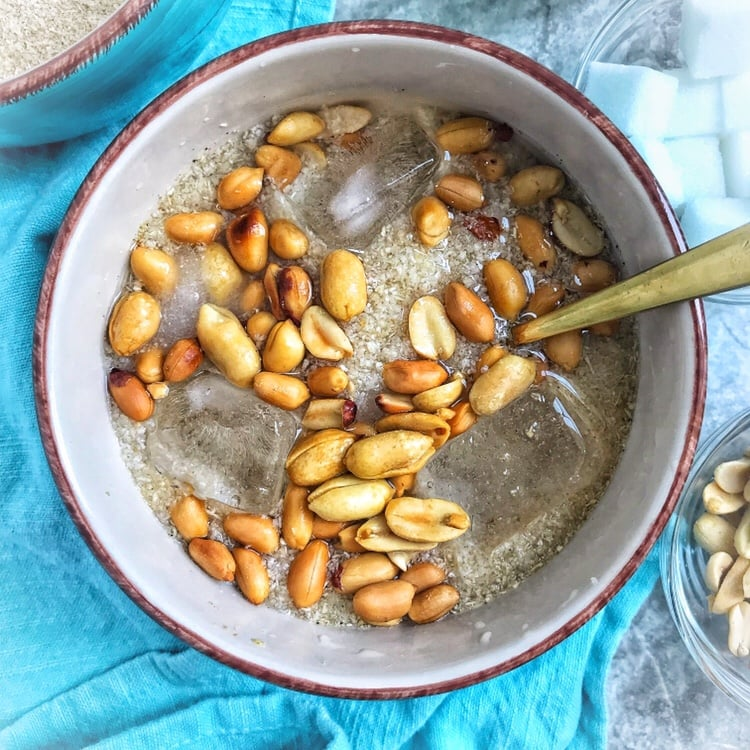

Garri

Description
Soaked garri is a beloved West African dish, originating from Nigeria. It consists of garri, made from cassava flakes, soaked in water. Often enjoyed with sugar or topped with groundnuts or coconut, soaked garri is a versatile and affordable snack or light meal, cherished for its refreshing taste and cultural significance in Nigerian cuisine.
Ingredients
- Garri (cassava flakes)
- Cold water
- Sugar (optional)
- Groundnuts or coconut (optional toppings)
Steps
- Place the desired amount of garri in a bowl.
- Slowly pour cold water over the garri, just enough to cover it.
- Allow the garri to soak in the water for a few minutes, typically 2-3 minutes. The garri will absorb the water and soften.
- Gently stir the soaked garri with a spoon to ensure even moisture distribution.
- If desired, add sugar to taste and stir it into the soaked garri.
- You can also add toppings like groundnuts or grated coconut for added flavor and texture.
- Serve the soaked garri in bowls or plates.
- It is traditionally eaten by scooping it with your fingers or a spoon and enjoying it with the toppings.
Enjoy your refreshing bowl of soaked garri!